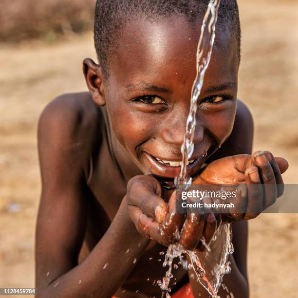

Imagine having to walk miles every day just to find water. For millions of children, this is a daily reality. With your help, we can bring clean, safe water to communities in need and change lives forever.
Every penny donated by the public funds clean water. Private donors cover our operating costs.
We collaborate with community-based organizations to build sustainable water projects.
We track every dollar and show exactly where your money goes using GPS and photos.
charity: water is a nonprofit that believes everyone has the right to clean water. Our vision is to end the water crisis in our lifetime through technology, compassion, and community.